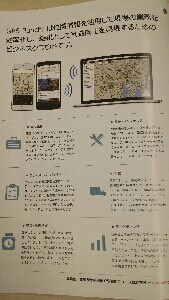
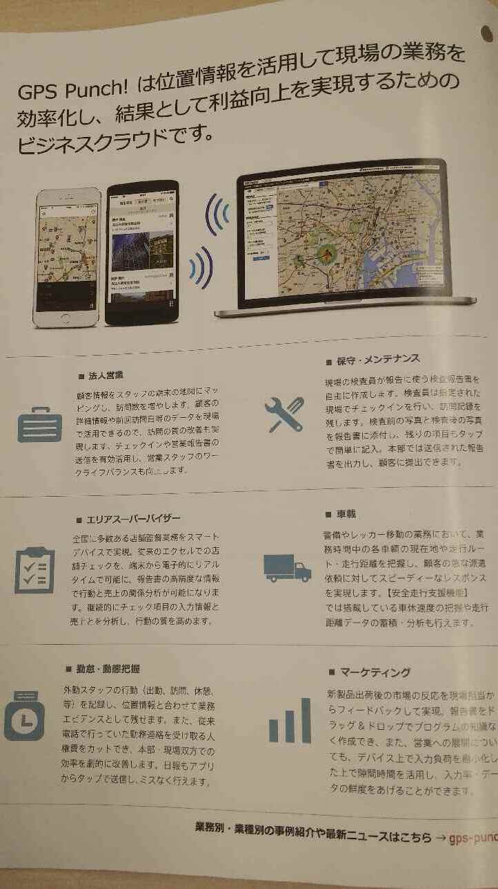

最新情報¶
アプリのスポット詳細画面を使いやすく変更します。(Android)¶
スポットの詳細画面に表示される「スポット基本情報」と「報告一覧」を分けることで、今までよりも使いやすくなります。
{kind=link}
変更になるバージョン¶
- Android v3.9.0 ・・・ 2016年8月1日予定
アプリのスポット詳細画面を使いやすく変更します。（iOS）¶
スポットの詳細画面に表示される「スポット基本情報」と「報告一覧」を分けることで、今までよりも使いやすくなります。
{kind=link}
変更になるバージョン¶
- iOS v3.6.0 ・・・ 2016年3月頃予定
アプリで撮った写真が大きく・見やすくなります。¶
- 従来の写真の圧縮処理を見直して、画質の改善や解像度の維持ができるようになりました。
- 建物の写真の細かい部分も見やすくなります。
- 今まで読み取れなかった書類の文字も読みやすくなります。
画像比較¶ 従来 新方式 画像   解像度 約10万画素 約80万画素 ファイルサイズ 50KB 100KB
{kind=link}
{kind=link}
ご利用における注意点¶
- 管理サイト、アプリの一覧画面上での表示サイズは今までと変わりませんので、変化が見られないかと思いますが、クリック(タップ)していただくと従来より画像サイズが大きく、見やすくなっていることが実感できるかと思います。
- ダウンロードした際にも従来よりも画像サイズ、ファイルサイズが大きくなっており、固定サイズではなくなります。
注釈
ダウンロード後にEXCELなどで整形をされているお客様は、この点をご注意ください。
ご利用いただくまでの流れ¶
- 当機能はお客様ごとに開始日をずらして、段階的にご利用できるよう準備を進めております。
- ご利用可能な時期になりましたら、その2週間前に管理サイトのお知らせよりご連絡いたします。
- それまでに、アプリのバージョンアップの進めていただきますようお願い致します。
- この圧縮処理の変更を有効にするにはアプリのバージョンをiOSの場合は3.5.4以上、Androidの場合は3.5.4.0以上にする必要があります。
- 全ユーザーのバージョンアップが完了しているお客様から優先的にご利用いただけるように進めさせていただきます。
- ご利用可能日になりましたら、必ずアプリで設定の同期をしてください。
- 設定の同期後に撮影した写真からサイズが大きく、見やすくなります。
- 設定の同期をしなくても今まで通り操作はできますが、同期をしたユーザーと同期をしていないユーザーで写真のサイズ、画質が異なってしまいます。
ユーザーのアプリバージョンを確認するには¶
- 管理サイトの[グループ・ユーザー設定] > [ユーザー管理]の一覧リストに表示されている「アプリバージョン」をご確認ください。
「アプリバージョン」の横の三角アイコンで並べ替えができます。
報告書にバーコード読み取り機能を追加しました。現場での活用方法がさらに広がります。¶
現場で各種コードを読み取り、報告書に文字を自動入力できます。
報告書の設定
報告書の設定
- 管理サイトの[報告設定] > [フォーマット設定]より報告書を作成してください。(管理サイトマニュアルP.46参照)
- フィールド追加より[バーコードリーダー]のフィールドを追加することで利用可能です。
アプリでの利用
- アプリの[設定]より[設定を同期]を実行することで、報告書が利用できるようになります。
- 報告書内の「コードをスキャン」の箇所をタップするとカメラが起動して、バーコードの読み取りができます。
利用できるバーコードの種類¶ Android CALENDAR_EVENT, CODABAR, CODE_128, CODE_39, CODE_93, CONTACT_INFO, DATA_MATRIX, DRIVER_LICENSE, EAN_13, EAN_8, EMAIL, GEO, ISBN, ITF, PDF417, PHONE, PRODUCT, QR_CODE, SMS, TEXT, URL, WIFI iOS7以降 UPCE, Code39, Code39Mod43, EAN13, EAN8, Code93, Code128, PDF417, QR, Aztec iOS8以降 上記 + Interleaved2of5, ITF14, DataMatrix 注釈
本機能が利用できるバージョン
- iOS ver 3.5.4 以降
- Android ver 3.5.4.0 以降
ユーザーのアプリバージョンを確認するには
- 管理サイトの[グループ・ユーザー設定] > [ユーザー管理]の一覧リストに表示されている「アプリバージョン」をご確認ください。
{kind=link}
{kind=link}
{kind=link}
v3.5.0:スポット機能の強化により、現場での活用方法がさらに広がります。¶
アプリバージョンv3.5.0で以下のスポット機能を強化して、現場の操作時間を減らし、 さらに活用できるケースを増やします。
- スポット検索の高速化
- 検索機能の強化
- 条件の項目追加
- 検索条件の保存
- 自動縮尺のルール変更
スポットの詳細画面から報告書が入力できるようになります。¶
スポット検索後にそのまま報告書が入力できます。
本機能が利用できるバージョン
- iOS ver 3.4.3
- Android ver 3.4.3